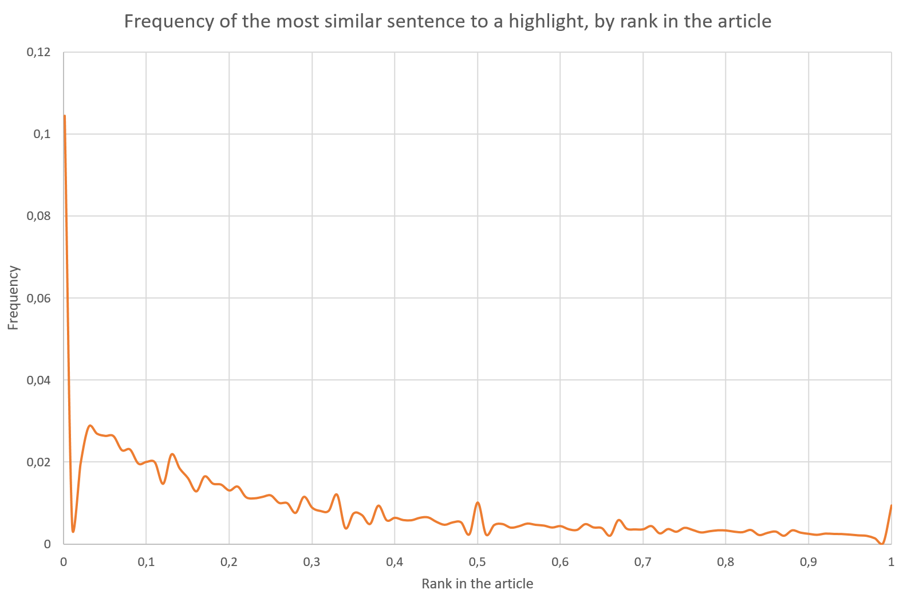

The DMQA corpus contains about 310 000 news articles from CNN and the Daily Mail. It's ostensibly used to train question-answering models, but an interesting feature of the corpus is that each article contains a few 'highlights': short sentences that are supposed to present the main points of the article. It might therefore be possible to use this corpus for automated summarization, using the existing highlights for supervised training. I set out to investigate this and see what I can come up with in a short period of time (~2 weeks).
I started by trying to familiarize myself with the corpus and its contents. Before even reading any articles, I had a few questions that I wanted to answer:
With those questions in mind, I read quite a few articles from the corpus, to get a feel for the kind of data I was working with. The contents and highlights of each article are stored in a text file. Here's an example of one such (very short) file:
The U.N. General Assembly voted Tuesday in favor of a resolution calling for an
end to the economic, commercial and financial embargo imposed by the United
States against Cuba.
There were 186 member states in favor of the resolution, two against, and three
abstentions.
The vote is non-binding. It was the 20th consecutive year that the United
Nations has voted to condemn the U.S. embargo, which was put in place in 1960.
The two opposing votes came from the United States and Israel.
@highlight
For the 20th consecutive year, a General Assembly resolution urges an end to the
embargo
@highlight
Only the United States and Israel vote against the measure; 186 nations vote in
favor
The format is pretty simple: first the contents of the article, then several
highlights, delimited by @highlight. About 90% of articles have between 2
and 5 highlights, and the average length of highlights is about 50 words per
document.
At first sight, it seems that highlights can mostly stand on their own, especially if the title is added. For example, the title of the article above is U.N. again calls for end of U.S. embargo on Cuba. It's not unreasonable to imagine a tweet with the following contents: U.N. again calls for end of U.S. embargo on Cuba: only the United States and Israel vote against the measure; 186 nations vote in favor. (which is incidentally just below the 140 character limit). Highlights however generally contain referents that might be unclear without a bit of context coming either from the title or from other highlights. One example is the measure above, where the reference can be found in the title. Another example is the following pair of highlights:
In this case, it's unclear what 'he', 'his' and 'him' refer to in the second highlight if we don't have the first highlight. However, having all the highlights together might form a 'proper' summary that can be read from beginning to end.
We would like to know how well an article is summarized by its 2 - 5 highlights. After reading quite a few articles, I found that highlights could be roughly classified in the following categories:
Of course, this is merely some hand observation, not actual data. We'd like to know in general, given a highlight, what are the most similar sentences to it in the article. We must therefore define what 'similarity' means. In this case, n-gram overlap is a straightforward measure to use. I used ROUGE-2 specifically. The details are in [0], but basically, ROUGE-N calculates the recall of bigrams between a reference and a candidate (i.e. it is maximized when the candidate contains all the bigrams in the reference).
With this in mind, we can then look at the articles to determine which sentences are most similar to each highlight of the article. There are two things we might be interested in at first:
I computed the most similar sentences of a document to each highlight, and dumped their rank and associated similarity with the highlight. Instead of using the rank directly, however, I normalized it with the document length.
Looking only at the most similar sentence for each highlight (in other words, the 'best match' for a highlight), we have the following distribution:

Since we are dealing with news articles, this is completely unsurprising. A highlight's most similar sentence has a very large chance of being in fact the first sentence in the article; afterwards, this chance decays exponentially. A point of note is the presence of small spikes around the halfway mark and the end. Since over 70% of articles have either 3 or 4 highlights, it seems that some of the writers simply decided to pick the first, middle and last sentences of their articles as highlights.
An important point not seen on the graph is that in fact, 11% of highlights do not overlap at all with any sentences in their respective articles, which means they were purely abstractive. This is the most common class of highlight. In fact, if we consider a highlight to be 'extractive' only if it has a best similarity score of at least 0.3 (meaning that 30% of the bigrams in the highlight are found in the best-matching sentence), then nearly half (48%) of the highlights are not extractive. The choice of a similarity score of 0.3 is quite arbitrary, but illustrates the fact that a large amount of the highlights are only superficially similar to their associated articles.
After toying around with the data gathered in the previous section, I looked at the 'shape' of sentence similarities for each highlight. For example, a given highlight might have the following similarity sequence:
[(7, 0.83), (37, 0.33), (1, 0.16)]
In this case, the highlight had 83% overlap with sentence 7 of the article, 33% overlap with sentence 37 and 16% overlap with sentence 1. In this case we can reasonably conclude, without even looking at the article, that the highlight was probably just a shortened version of sentence 7, and the overlap with other sentences is mostly coincidental. Looking at the actual data confirms this:
On the other hand, we could expect a highlight which draws equally from many sentences to not actually be extractive, but really to just coincidentally overlap the sentences in question.
Therefore, I tried to see the different kinds of overlap behaviors. The idea is
to cluster the similarity scores of highlights by shape similarity. I wanted to
have a way of comparing similarity sequences that was relatively invariant to
the actual values of the sequence; therefore, I decided to do clustering based
on deltas between successive values. In other words, the similarity sequence
[0.75, 0.5, 0.5, 0.2] was transformed to [-0.25, 0, -0.3]. Sequence
distance was set to be the sum of squared differences between pairs of elements.
To cluster sequences, I simply used a greedy algorithm wherein each cluster had a representative and sequences were either added to an existing cluster or a new one based on a threshold on the sequence distance. Here I could have also used for example a density-based clustering algorithm such as DBSCAN. In this case the well-known k-means doesn't apply very well since we don't know the number of clusters we are looking for.
After clustering, I decided to ignore clusters with less than one percent of the highlights (there are about a million total highlights, so I discarded clusters with less than 10'000 elements). Again, this is fairly arbitary, but we're interested in general tendencies. This left me with 12 clusters which contained over 90% of the highlights. A few of those clusters were also similar in sequence behavior to each other, the only thing changing being the number of elements in the sequence. For example, the following sequences were in different clusters:
[0.33, 0.33, 0.33, 0.33, 0.16, 0.16, 0.16, 0.16, 0.16][0.22, 0.22, 0.22, 0.11, 0.11]However, they share a very similar behavior, namely that they draw from a large amount of sentences (remember that the average length of a highlight is about 50 characters, so no more than a few words - therefore, even overlapping with three sentences is already a large amount), at relatively low levels. This means that they're not that fundamentally different, and in reality the reason why the first sequence has more elements could be simply because the article in question was longer.
Broadly, I classified the sequences in four categories from the clusters:
Again, this is fairly predictable, but it's good to have it confirmed. An interesting point to note is that the third category, highlights that are very similar to two sentences, do not necessarily draw different information from both sentences. Sometimes, this can be caused by image captions still in the text of the article, which themselves have similar text to a sentence of the article. At other times, it can be caused by an organization/place name that is quite long and thus takes most of the highlight, while also being used multiple times in the article text. This seems to point to the fact that most highlights mainly draw from one sentence at most, which seems reasonable given the fact that highlights are so short.
This project was over a short period of time, so I didn't get into all the areas I wanted to explore. Still, exploring this dataset allowed me to make some interesting observations. Highlights in general are only superficially extractive; when they are, they predictably take their content from the sentences closer to the beginning of the article. Therefore, simple overlap measures seem inadequate to measure the 'quality' of a highlight. To go further, I would have to try using a metric that's more 'semantic' in nature.
One task that remains in the exploration of the corpus is to properly evaluate whether the collection of highlights for an article provide an adequate summary. I cursorily glanced over a few articles and found that that seemed to be generally the case, but it would be good to make sure. For that, one could run a known summarization algorithm on the articles, and then compare the results with the highlights. The reasoning is that we know in general the performance of a given algorithm, so we can compare it with the performance obtained on this dataset. If we get results that are markedly different than with other corpora, this could give us a hint about whether the highlights are adequate summaries or not.
However, interpreting the results could be challenging; if the algorithm performs more poorly under the metric we use, is it because the highlights don't form a good summary or because the the metric is not adapted to highlights? Similary, if the algorithm performs better, is it because the highlights do form a good summary or because they 'overfit' the measure? In this case, perhaps the best way is good old-fashioned human judgement.
It would also be interesting to try extracting highlights. This is in fact very similar to a summarization problem, except that the output is very short and only needs to capture one interesting point of the article (as opposed to its entire point). The method I would like to try on this is documented in [1]. The general idea is to cluster sentences in the document based on semantic similarity. Every cluster is to be realized as one output sentence. In our case, every cluster would be a potential highlight. The actual language generation is done by a Markov process where each step indicates which word to generate, based on a bigram model of the cluster. This seems like an interesting avenue to try because clustering an article based on sentence gives us several clusters from which we are then free to pick, depending on how many highlights we'd like to generate.
[0] Lin, C. Y. (2004, July). Rouge: A package for automatic evaluation of summaries. In Text summarization branches out: Proceedings of the ACL-04 workshop (Vol. 8).
[1] Murray, G. (2015, June). Abstractive meeting summarization as a Markov decision process. In Canadian Conference on Artificial Intelligence (pp. 212-219). Springer International Publishing.